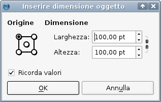
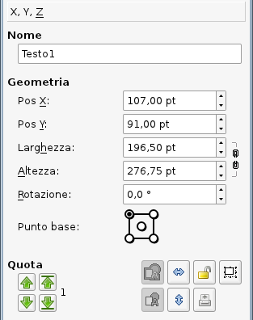
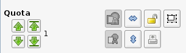
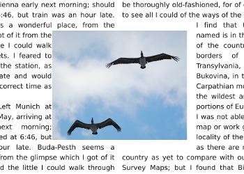

Lavorare con Scribus consiste, per la maggior parte, nel lavorare con un ambiente a cornici. Nei menù e nei comandi compaiono alcuni termini più generici, come oggetti o elementi, e le cornici sono un particolare tipo di oggetto o elemento. Scribus comprende cinque tipi di cornice:
A ciascuna di esse è dedicata una sezione di questo manuale online, ma qui spiegheremo le caratteristiche che hanno in comune.| Se cambiate idea o avete premuto il tasto sbagliato (almeno nei casi 1,2,3) potete premere il tasto Esc o la barra spaziatrice per annullare l'operazione, o fare clic sull'icona giusta nella barra delle applicazioni.
Quando create una cornice usando uno dei primi tre modi, il cursore del mouse cambia forma ed entra nella modalità di disegno della cornice, e compare un piccolo riquadro con le posizioni X e Y del cursore. Mentre trascinate da un angolo a quello opposto per creare la cornice, il riquadro mostra la larghezza e l'altezza della cornice che state creando; per le forme e i poligoni, sono le dimensioni della cornice dell'oggetto. Di solito il passo successivo consiste nell'inserire del contenuto o nel modificare in qualche modo la cornice, ma di questo parleremo nelle sezioni dedicate a ciascun tipo di cornice. |

Qui sopra è mostrata la finestra di dialogo Inserire dimensione oggetto che compare quando si fa clic col tasto sinistro sulla pagina, senza trascinare il mouse. Ovviamente essa può essere molto utile quando si vuole creare una cornice di certe precise dimensioni. I campi Larghezza e Altezza sono caselle di controllo il cui uso sarà spiegato sotto. |
C'è una funzione utile e veloce che consiste nel tener premuto il tasto Maiusc mentre si fa clic col pulsante sinistro sulla pagina (dopo aver selezionato l'opportuno strumento sulla barra degli strumenti, o usato il corrispondente tasto di scelta rapida). Questa operazione crea una cornice che riempie l'intera pagina fino ai bordi. Questi bordi saranno i margini se non vi sono guide, ma se ve ne sono la cornice si estenderà nelle quattro direzioni fino alla guida o al margine più vicino. La griglia non ha influenza su questa modalità di creazione di cornici. Fate una prova per scoprire cosa succede quando fate clic al di fuori dei margini.
Spostare corniciIl metodo più semplice consiste nel fare clic all'interno della cornice, tenere premuto e trascinare col mouse. Durante lo spostamento compare un piccolo riquadro con la posizione del punto base (il punto base predefinito è l'angolo superiore sinistro). Potete anche usare i tasti freccia per spostare la cornice, purché il cursore non si trovi su una casella di controllo. Per spostamenti più precisi, usate il pannello Proprietà > scheda X,Y,Z (Pos X e Pos Y) e le sue caselle di controllo. Ridimensionare corniciQuando una cornice è selezionata, ha il bordo a puntini rossi e piccole maniglie quadrate agli angoli e a metà di ciascun lato. Per cambiare le dimensioni manualmente fate clic su una maniglia e trascinatela tenendo premuto il tasto del mouse. Se tenete premuto il tasto Alt e il cursore non si trova sopra una casella di controllo, potete ridimensionare la cornice con i tasti freccia. Per ridimensionare la cornice mantenendo le proporzioni dei lati, premete Ctrl+Alt mentre trascinate una maniglia. Per modifiche precise usate le caselle di controllo Larghezza e Altezza nel pannello Proprietà. |
 |
Cambiare la quota o il livello di una cornicePotete spostare una cornice a una quota superiore o inferiore in Proprietà > scheda X,Y,Z, nella sezione Quota; potete spostarla di una quota alla volta, oppure alla quota più alta o più bassa. Il numero accanto ai pulsanti con le frecce indica la quota attuale dell'oggetto (1 è la più bassa).Per queste operazioni vi sono dei tasti di scelta rapida:
L'ultima parte della scheda X,Y,ZEsaminiamo l'ultimo gruppo di pulsanti in basso a destra nella scheda X,Y,Z. I due pulsanti più a sinistra (disabilitati in quest'immagine) raggruppano o separano un insieme di oggetti selezionati (notate che i disegni vettoriali vengono sempre importati come gruppi di oggetti). I due pulsanti successivi, con le frecce azzurre, ribaltano l'oggetto in orizzontale o in verticale. Il pulsante con il lucchetto permette di bloccare o sbloccare l'oggetto selezionato, e quello immediatamente alla sua destra permette di bloccare o sbloccare soltanto le dimensioni dell'oggetto selezionato. L'ultimo pulsante in basso a destra abilita o disabilita la stampa (e anche l'esportazione nel PDF) dell'oggetto. |
 |
Il modo più semplice di selezionare un gruppo di cornici è fare clic e trascinare il mouse, tracciando un rettangolo intorno ad esse. Dovete però fare in modo che ciascuna delle cornici che volete selezionare sia completamente compresa nel rettangolo. Questo metodo potrebbe non essere adatto quando volete selezionare soltanto alcune delle cornici comprese in un certo spazio rettangolare. In questa situazione potete selezionare le cornici una dopo l'altra tenendo premuto il tasto Maiusc mentre fate clic sulle cornici stesse. Se selezionate una cornice per errore, potete deselezionarla facendo di nuovo clic su di essa, sempre tenendo premuto Maiusc. Se non avete ancora raggruppato le cornici, potete fare clic all'esterno delle cornici selezionate per annullare la selezione multipla. Potete anche combinare questi metodi facendo clic e trascinando intorno a determinate cornici, e poi facendo clic + Maiusc su altre cornici che volete selezionare o su quelle che volete deselezionare.
Nota: usando questo metodo, potrebbe capitarvi di non riuscire a selezionare una certa cornice. In questo caso la cornice non selezionabile potrebbe trovarsi su un altro livello. Potete lavorare su un solo livello per volta.
| La prima cosa importante da ricordare è che questa proprietà può essere impostata per cornici di ogni tipo, e che ha effetto su ogni cornice di testo al di sotto di quella per cui è impostata (al di sotto significa non solo a una quota inferiore, ma anche a un livello inferiore).
In secondo luogo, si deve scegliere se il testo dovrà fluire intorno alla cornice, alla sua linea di contorno, o al suo riquadro di delimitazione; la scelta si fa nella scheda Forma del pannello Proprietà. Per le cornici di testo e le cornici immagine, tutti e tre coincidono quando la cornice viene creata. Per quanto riguarda le forme e i poligoni, soltanto la cornice e la linea di contorno coincidono (cioè sono identiche alla forma/poligono stesso), mentre il riquadro di delimitazione è sempre il rettangolo circostante. I dettagli sono spiegati in Lavorare con le forme, ma nella scheda Forma del pannello Proprietà è possibile modificare la forma della cornice o la linea di contorno. Nella schermata qui sotto, la colonna sinistra fluisce intorno alla cornice, la colonna destra fluisce intorno alla linea di contorno che è stata modificata (allargata): |
|  |
Vedi anche: